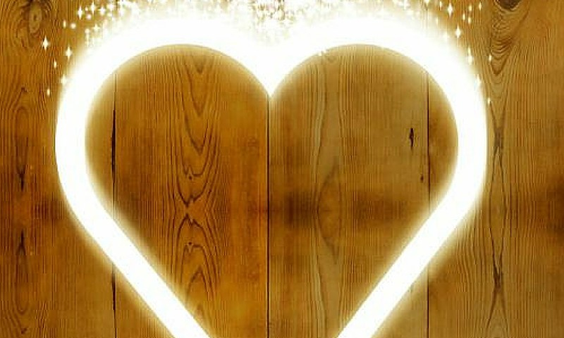

Konkurso “Kamštelių vajus 2015” simbolis – Niekučių šeima keliauja per Lietuvą - Ūkininko patarėjas
2020.10.28 07:51

Pagrindinis Apie mus Prenumerata Prenumerata Lietuvoje Prenumerata užsienyje Reklama Pranešimai Verta žinoti Video Konkursai Saldi vasara Pasibaigęs Mano vasaros darbai Pasibaigęs Birželis – braškių mėnuo Pasibaigęs Žurnalo „RASOS” prenumeratos konkursas Pasibaigęs Pamačiau-įamžinau Pasibaigęs Fotokonkursas “Ūkininkaitė 2014″ Pasibaigęs Fotografijų konkursas „Jaukumas“ Pasibaigęs Kontaktai Kaip pirkti? Pagalba Prisijungti Registruotis
Pagrindinis Apie mus Prenumerata Prenumerata Lietuvoje Prenumerata užsienyje Reklama Pranešimai Verta žinoti Video Konkursai Saldi vasara Pasibaigęs Mano vasaros darbai Pasibaigęs Birželis – braškių mėnuo Pasibaigęs Žurnalo „RASOS” prenumeratos konkursas Pasibaigęs Pamačiau-įamžinau Pasibaigęs Fotokonkursas “Ūkininkaitė 2014″ Pasibaigęs Fotografijų konkursas „Jaukumas“ Pasibaigęs Kontaktai Kaip pirkti? Pagalba Prisijungti Registruotis Pagrindinis Ūkininko patarėjas Agropolitika Organizacijos Rinka Augalininkystė Gyvulininkystė Bitininkystė Paukštininkystė Pienininkystė Technika Aplinka, miškai Kultūra Rasos Mėnesio darbai Sausis Vasaris Kovas Balandis Gegužė Liepa Birželis Rugpjūtis Rugsėjis Spalis Lapkritis Gruodis Aplinka Dendrologija Gėlynas Palangė Floristika Lysvė Sodas Su eko ženklu Klausk specialisto Gamta Įspūdžiai Kaimo laikraštis Knygos Apie mus Reklama Pranešimai Verta žinoti Kontaktai Šeima Namai Pažintys Psichologija Sveikata Maistas Grožis Mada Rankdarbiai Augintiniai Žalioji oazė Margumynai
Skelbimai
Gyvulininkystė (2)
Paukščiai (2) Meniu Agropolitika Amatai Visuomenė Organizacijos Rinka Augalininkystė Gyvulininkystė Bitininkystė Paukštininkystė Pienininkystė Technika Aplinka, miškai Kultūra Verslas Ūkis Laisvalaikis Teisėtvarka Kooperacija Kaimo turizmas Maistas Pinigai Sveikatos apsauga Medžioklė AKM Politika „Pyragų karalius“ Sodininkystė Jaunimas Renginiai Agroekonomika Žuvininkystė Turi bėdų? Kreipkis į „Ūkininko patarėją“! Istorija Statybos Extra Aktualijos Šeima Jaunoms mamoms Namai Pažintys Psichologija Sveikata Maistas Grožis Mada Rankdarbiai Augintiniai Žalioji oazė Margumynai Aplinka Dendrologija Gėlynas Palangė Floristika Lysvė Sodas Pažintys Su eko ženklu Klausk specialisto Gamta Įspūdžiai Mėnesio darbai Sausis Vasaris Kovas Balandis Gegužė Birželis Liepa Rugpjūtis Rugsėjis Spalis Lapkritis Gruodis Žvilgsnis Verslas Spausdintos knygos Elektroninės knygos Kaimo laikraštis 2020 Spalis Trečiadienis 28 Almana, Almanas, Almė, Almilė, Almis, Almantė, Daukanta, Daukantas, Daukintė, Gaudrė, Gaudrimas, Gaudrius, Simanas, Sima, Simas, Simona, Simonas, Skirmantas, Judas, Tadas, Tadė
Karšta bulvė
Seimo politinė švytuoklė krypsta į dešinę
Skaityti toliau... Visos naujienos
Orai šiandien
Mountain View +23,7 °C dangus giedras Vėjas: 2,6 m/s šiaurės Slėgis: 1017 hPa Drėgnumas: 23% , krituliai: nėra Mėnulio fazė: Priešpilnis Saulė teka: 17:28 , leidžiasi: 04:15 Dienos ilgumas: 10:47 Atnaujinta: 2020-10-27 02:48 Išsamesnės prognozės
Apdovanojimas
www.ukininkopatarejas.lt internetinė svetainė apdovanota tarptautinės parodos medaliu "Sprendimų ratas 2014" ------------------------------------------------ Lietuvos žemės ūkio bendrovių asociacijos surengtoje apklausoje „Ūkininko patarėjas“ pripažintas naudingiausiu agroverslo visuomenei 2014-ųjų leidiniu.
Naudinga
Kalorijų skaičiuoklė Kūno masės indeksas Metabolizmo rodikliai
Konkurso “Kamštelių vajus 2015” simbolis – Niekučių šeima keliauja per Lietuvą
Šis įrašas buvo paskelbtas Pranešimai temoj 2015-05-29 . Paskelbė ilevickyte . Titulinis » Pranešimai » Konkurso “Kamštelių vajus 2015” simbolis – Niekučių šeima keliauja per Lietuvą
Šių metų konkurso simbolis Niekučių šeima nuo šiandien stovi Užupio Menų inkubatoriuje. Mėnesį stovėję Konstitucijos prospekte, Niekučiai pradėjo savo kelionę po Lietuvą. Konkurso organizatoriai planuoja Niekučius vežti per visą šalį, primindami ir ragindami rinkti plastikinius butelių kamštelius ir dalyvauti jau ketvirtus metus vykstančiame konkurse „Kamštelių vajus“.
„Perkėlėme Niekučius iš Konstitucijos prospekte esančio Lietuvos Vaikų ir Jaunimo centro kiemo, nes vasarą Užupyje juos gali pamatyti daugiau žmonių čia labai daug turistų. Dar nebuvome pastatę Niekučių skulptūrų, tik atvežę į kiemą, kai pro šalį einantys užsieniečiai pradėjo rodyti didžiulį susidomėjimą ir fotografuotis su Niekučių šeima. Kviečiame juos plastikinių butelių kamštelius įmesti į skulptūras. Tai ir atraktyvi, ir funkcionali, ir daug klausimų apie Žemės ateitį kelianti skulptūra.“ – pasakoja skulptūrą sukūrusi kitokio dizaino studijos „Absurdo idėjos“ įkūrėja, dizainerė Jurgita Jakubauskaitė .
Viešosios įstaigos „Draugiški šeimai“ stegėja, konkurso sumanytoja ir organizatorė Birutė Jakučionytė sako: „Paskutinėmis mokslų metų dienomis dar kartą norime priminti visoms Lietuvos mokymo įstaigoms, visiems darželiams, bendruomenės, kad vasaros atostogas praleistų naudingai rinktų plastikinius butelių kamštelius ir nepamirštų savo komandos priregistruoti šių metų konkursui. Prieš mėnesį paskelbtame konkurse jau prisiregistravo arti šimto komandų. Pernai konkurse dalyvavo du šimtai komandų ir surinkome beveik aštuonias tonas kamštelių. Manau, kad šiemet surinksime beveik dvigubai daugiau.“
Konkursui „Kamštelių vajus“ yra renkami visi kieto plastiko, neperšviečiami, spalvoti HDPE kamšteliai nuo gaiviųjų gėrimų ir vandens. Kai kurios talpos ir buteliai turi iš HD plastiko pagamintus dangtelius ir kamštelius, tačiau ant jų turi būti parašyta dvi raidės HD, arba keturios raidės HDPE, arba skaičiukas „2”. Netinka lankstūs, skaidrūs kamšteliai ir dangteliai (nuo majonezo kibirėlių, šampano, stiklainių), netinka kamšteliai nuo skalbiklių ir ploviklių ant kurių yra raides PP ar bet kokios kitos raidės ir skaičiai. Visi surinkti kamšteliai turi būti švarūs ir be jokių šiukšlių.
Šiemet konkurso finalas vyks net dvylikoje Lietuvos miestų. Juose bus įrengti kamštelių surinkimo punktai: Spalio 6d. Utenoje, Spalio 7d. Panevėžyje, Spalio 8d. Joniškyje, Spalio 9 d. Mažeikiuose, Spalio 12d. Plungėje, Spalio 13d. Šilutėje, Spalio 14d. Kelmėje, Spalio 15d. Kaune, Spalio 16d. Marijampolėje, Spalio 19d. Alytuje, Spalio 20d. Druskininkuoe, Spalio 21d. Vilniuje.
„Visų miestų, kuriuose vyks konkurso finalas, savivaldybių administracijos noriai jungiasi prie konkurso ir organizuoja savo miestuose masinius kamštelių rinkimus per įvairius miesto renginius. Žinau, kad Druskininkuose sujudęs visas miestas. Sako, kad ir Utenoje jau neberasi nei vieno numesto kamštelio – visi surinkti. Šiemet ne tik atskiros komandos, bet ir miestai nori važytis vieni su kitais. Manau, kad spalio mėnesį turėsime labai įnirtingą kovą.“ – dalyvių aktyvumu džiaugiasi konkurso organizatorė B. Jakučionytė.
Konkursas „Kamštelių vajus‘2015” tęsis dar penkis mėnesius. Prisiregistruoti konkursui galima iki rugsėjo 10 dienos internetinėje svetainėje www.kamsteliuvajus.lt .
Konkursą remia VšĮ „Žaliasis taškas“.
Konkurso „Kamštelių vajus“ organizatorius: Vš Į „Draugiški šeimai“
Daugiau informacijos apie konkursą ieškokite: www.kamsteliuvajus.lt ir www.ekodaiktai.lt
Atsakingi asmenys: Birutė Jakučionytė tel.: +370 618 12181 ekodaiktai@gmail.com ir Milda Auglytė tel.: +370 606 13263 m.auglyte@gmail.com
← Ekonominių vertinimų rodiklis 2015 m. gegužės mėn. sumažėjo 3 procentiniais punktais Paskutinę gegužės savaitę AKM nustatytas 2 šernams
Kontaktai
UAB “Ūkininko patarėjas” Įmonės kodas 133122411 PVM mokėtojo kodas LT331224113 Gedimino g. 27, LT-44319 Kaunas Tel. (8-37) 225 300 Faksas (8-37) 223 452 El. paštas: redakcija@up.lt
Duomenys apie UAB “Ūkininko patarėjas” kaupiami ir saugomi LR Juridinių asmenų registre
Svetainės struktūra | Prekių pirkimo - pardavimo el. parduotuvėje taisyklės
Dėl geresnės puslapio paslaugų kokybės šiame tinklapyje naudojami slapukai (angl. cookies) kurie renka informaciją apie tinklapyje esančių lankytojų skaičių ir jų veiksmus šiame tinklapyje. Naršydami toliau Jūs sutinkate, kad slapukai būtų įrašyti Jūsų kompiuteryje iki naršymo tinklapyje pabaigos. Slapukų politika Sutinku
Figos: Irzlūs, aikštingi, besipešantys dėl visokių niekučių Kosmetinė arba mažų niekučių dėklas by Toma • September 20. Tai ryškiaspalvė kosmetinė arba moteriškų mažų niekučių dėklas, kurio dėka rankinėjė tasite viską ko reikia. Ryškiai rožinės ir languotos žydrai balto audinio spalvų. Priekinėje dalyje puošnumui suteikti yra isiųtos banguotos šviesiai rožinės juostelės.
Gravitacijos krituliai (1 sezonas) - Animaciniai serialai ... Įvairių tinkamų niekučių davimas savo vaikui turės daug didesnę naudą, nei vien tik smagus užsiėmimas. Vaiko vaizduotė – tai pati didžiausia dovana, todėl įsitikinkite, kad savo atžalai suteikiate geriausius žaislus, kurie paskatintų jūsų kūdikio psichinį augimą. Žaislai yra įvairių formų, dydžių ir dizaino.
Florestano niekučiai | Knygos Tarp Florestano niekučių ir autorės kuriamų „niekučių" įmanoma surasti dar keletą panašumų: jie nėra stulbinantys, bet pakankamai išradingi, jaukūs, stilingi. Novelėse besimezgančios konfliktinės moters ir vyro situacijos, pavartojant skoningą įroniją ar žaismingą autoironiją, baigiasi elegantiška taiko sutartimi, tarsi ...
Konkurso “Kamštelių vajus 2015” simbolis – Niekučių šeima ... Juos tiesiog techniškai paverčia skystakiaušiais moterąvyriais. Inteligentiškiais pupuliukais. Kaip ir visos moterys, moterąvyriai tampa irzlūs, aikštingi, besipešantys dėl visokių niekučių, pastoviai vienas kitą apkalbinėjantys ir ieškantys saugumo savo buičiai užtikrinti.
Florestano niekučiai - Knygos.lt Niekučių Fėja; Dekoro burtai www.niekuciufeja.lt Priestočio g. 10, Klaipėda (44) Esu dekoro dizainerė iš Lietuvos, gyvenu Klaipėdoje. Jau nuo vaikystės mamai pasakiau, kad būsiu dailininke ir kaip bebūtų keista visas gyvenimas prie to ir vedė. Baigiau dailės mokyklą, baigusi 12 klasių aiškai žinojau, kad mano kelias turi vesti ...
Niekučių Fėja, Panevežio g 25a, Klaipeda (2020) Irnos Labokės novelės „Florestano niekučiai" , regis kuriamos tuo pačiu principu, kurio pagrindinis personažas Florestanas kuria savo niekučius. Ko gero, ir dėl panašių priežasčių. Tarp Florestano niekučių ir autorės kuriamų „niekučių" įmanoma surasti dar keletą panašumų: jie nėra stulbinantys, bet pakankamai išradingi, jaukūs, stilingi. Novelėse besimezgančios ...
Niekučių ir blizgučių pasaulyje nudžiuginti vaikus – vis ... Antradienis, puiki diena, nes Mamyčių klubo svečiuose - versli mama. Šįkart už trapių sparnelių pagavome ir iškamantinėjome labai įdomiu pavadinimu pasivadinusią mamą - "Niekučių fėją"!Raideles, papuošimus ir kitus nuostabius namams gaminanti klaipėdietė Lina Stonienė, verslą pradėjo susilaukusi sūnelio Mato Algirdo, kuriam dabar treji.
Kosmetinė arba mažų niekučių dėklas Aprašymas: Brolis ir sesuo (Dipper ir Mable) vasarai atvyksta paviešėti pas savo dėdę Stan, turintį mažą niekučių krautuvėlę. Viskas atrodo ramu iki tol, kol nebėra ramu. Vaikų pasaulis kupinas iššūkių, nuotykių ir pamokančių įvykių. 1 serija 2 serija 3 serija 4 serija 5 serija 6 serija 7 serija 8 serija 9 serija 10 serija 11...
Kokybiški žaislai, padedantys vystytis jūsų vaikui | NordBaby™ Seniau gana dažnai užsukdavau čia, nusipirkti kokių pigių niekučių į namus, bet kai atsirado IKEA, tad čia niekada jau ir nebeužsuku. Jyske, prekės yra gana pigios, bet kokybė tai tikrai apgailėtina, vienkartiniai daiktai, į kuriuos tik gražu pažiūrėti iš šalies, bet naudoti buityje ilgai nepanaudosit.